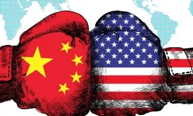
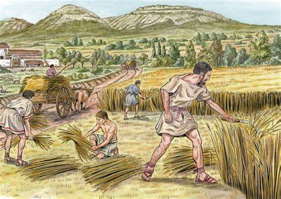
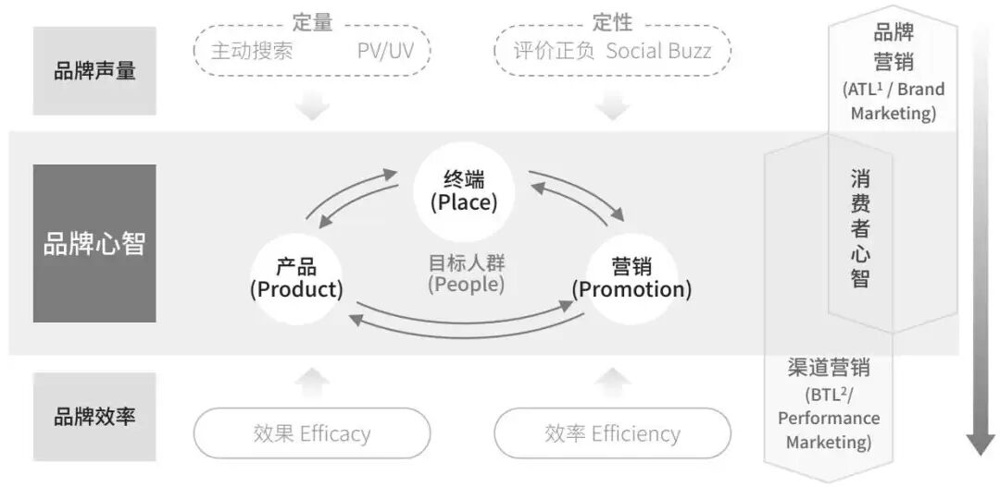
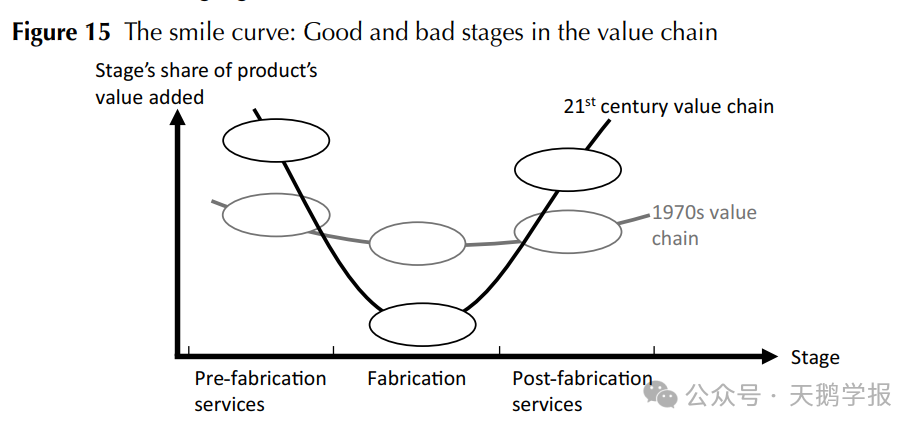
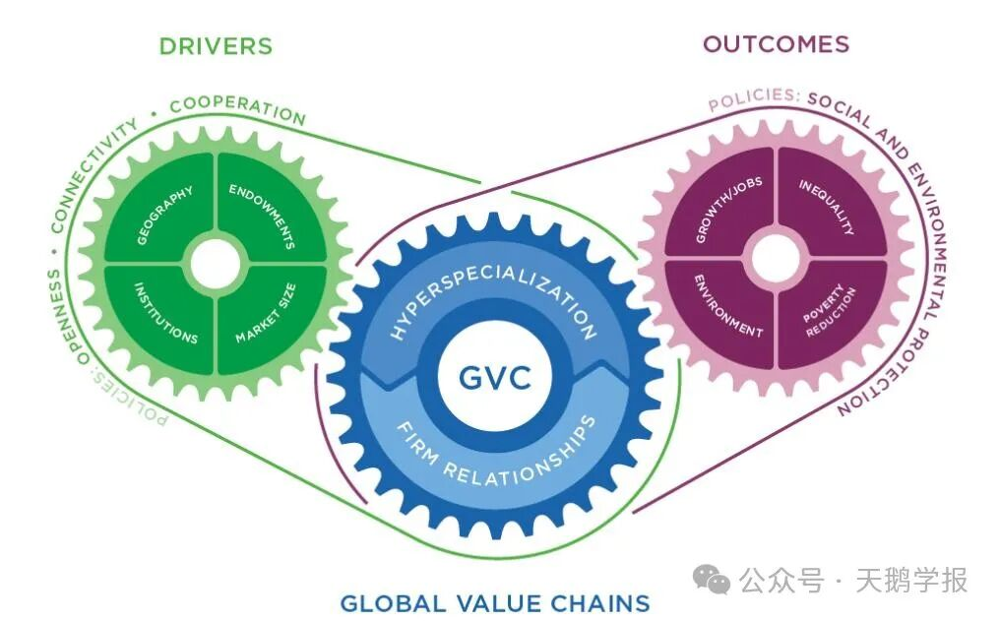
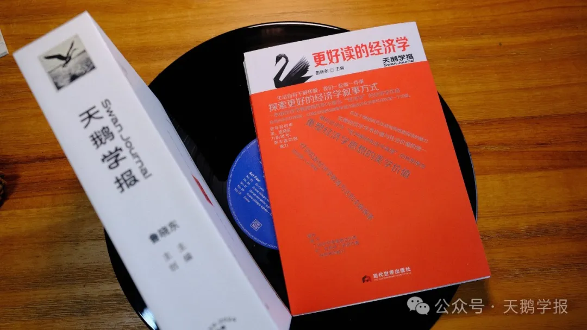
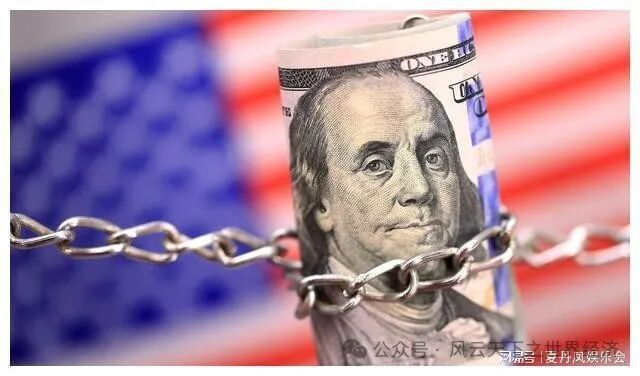
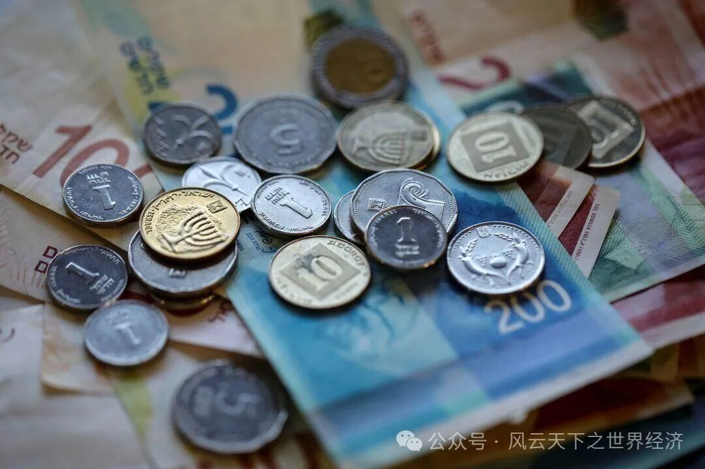
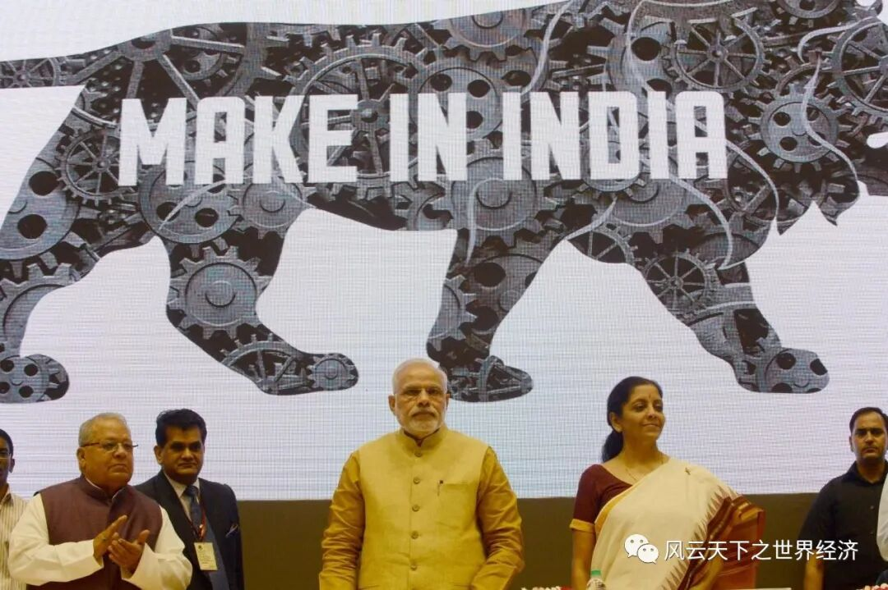
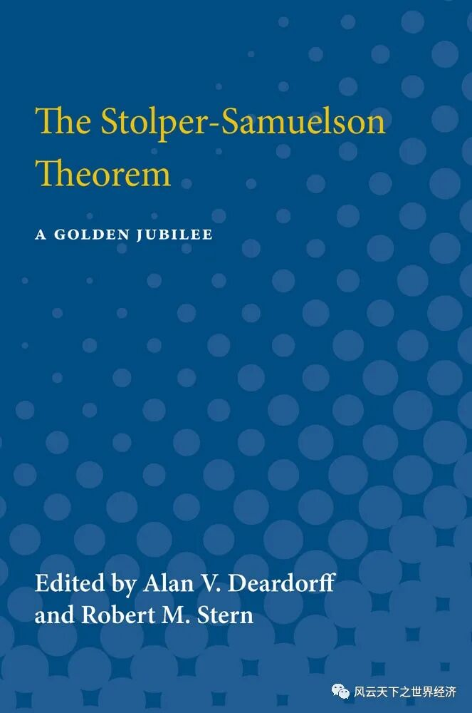

Archive
文章索引
全文搜索、系列导航与标签筛选都在这里汇合。

世界经济史 / 启蒙时代的经济启蒙
星光下的国度：启蒙时代的经济启蒙
十八世纪以来的英国，正处在从传统社会向现代国家转型的历史进程之中。在此过程中，启蒙思想的浪潮扮演了关键角色。

世界经济史 / 世界经济史
历史无处不罗马
历史无处不罗马，一代人又一代人的故事让世界历史成了不停温习罗马章节的复习课。

世界经济观察 / 世界经济观察
2026年全球经济形势预测：低速增长、分化加剧、风险累积
2025年很快就要过去了，那些在年初曾经困扰我们的不确定性在这一年里都变成了确定的事实。

世界经济史 / 世界经济史
足球上的政治经济学
体育无关政治”的口号是历史上每个时代的憧憬和理想，但可惜的是，体育从来都不只是单纯的娱乐和切磋，它总是和那个时代的经济政治话题如影随形。

世界经济观察 / 世界经济观察
“金价跌、金饰涨”背后的“投资逻辑”与“消费逻辑”
投资的黄金强调流动性、避险、宏观变量；消费的黄金强调文化认同、品牌溢价以及零售体验。

世界经济史 / 大地的悲剧之拉丁美洲
群岛国的悲歌：地理，地缘与历史
“每一件‘时事’包含着不同的原始运动和不同的节奏，今天的时间既始于昨天和前天, 又始于遥远的过去。”——布罗

世界经济观察 / 世界经济观察
经济安全是反全球化的正当理由吗？
以经济安全作为反全球化的理由是一种危险的假设，可能带来灾难性后果。那些致命的威胁就潜藏在幼稚产业保护论的“阿克琉斯之踵”、垄断竞争的风险和政治意图三个隐秘的角落。

世界经济史 / 沉睡的力量
莲花与刺的共舞：印度现代化的曲折之路
他们渴望在大城市的新世界里大步向前，却又很难不被来自乡村旧世界的规则与传统所累——印度的现代化之路，是莲花与刺的共舞。
世界经济史 / 大地的悲剧之拉丁美洲
拉美经济史碎片：诅咒与循环
小说家用故事叙述拉美循环的时间，而经济学的“依附理论”让拉美人民知道，穷，不是因为你不够努力。

世界经济史 / 大地的悲剧之拉丁美洲
墨西哥的毒品深渊
本文将从历史的角度解释墨西哥的经济政治缺陷的可能源头所在，描绘墨西哥走向毒品深渊的道路。

世界经济史 / 大地的悲剧之拉丁美洲
苦涩的甜
我本是救人于病榻的良药，但最后也成了腐蚀人心的毒品。我的存在揭露了人类最肮脏的本性，却也重新唤醒了他们的良心。

世界经济史 / 大地的悲剧之拉丁美洲
从黄金掠夺到制度陷阱
拉丁美洲为何依然在全球经济体系中处于边缘地位？
经济思想与社会 / 世界经济史上的“人”与“口”
AI浪潮下的“无用阶层”：新“卢德运动”？——兼论人工智能背景下的劳动力市场变化
在AI技术演进的漫长阶段，人类仍然能在这段时间中发展自身，形成“人机共融”而非被无情抛弃的局面。 自1956年人工智能（Artificial Intelligence）这一概念被麦卡锡提出以来，人工智能的发展便广受关注。2017年，由谷歌公司开发的阿尔法机器人（A

世界经济史 / 启蒙时代的经济启蒙
启蒙时代的工业启蒙
工业革命不是蒸汽时代、棉花时代、或者钢铁时代。它是进步时代。
天鹅学报与出版 / 新书发布
天鹅学报系列第三期: 回望世界经济史上的19XX年
天鹅学报03期微醺学术会07120世纪是经济史上离我们最近的⼀个世纪，当前全球经济的最新变化都是上⼀个百年⻓期

经济思想与社会 / 世界经济史上的“人”与“口”
机械的晨曦与无用者的黄昏
我刚刚意识到，人类可能只是硅基生命体的引导程序......就像电脑开机的引导加载程序，是引导开机的非常小的一段代码。

经济思想与社会 / 世界经济史上的“人”与“口”
无用之用，方为大用
就像是蝴蝶从幼虫成长为成虫一样，每一次破茧都是为了变得更加强大，对于人类经济社会而言，割舍掉“无用阶层”要经历切肤之痛，但在这之后，经济会逐渐达到一个新的稳定状态，展现出来的就是一个更加强大美好的社会图景。

经济思想与社会 / 世界经济史上的“人”与“口”
走出倦怠，重新成为人
从漫长倦怠中苏醒的人类，最终会重新成为人类。

经济思想与社会 / 世界经济史上的“人”与“口”
枷锁与翅膀：经济增长公式中的人
上帝为每张嘴都配了两只手和一颗脑袋。

经济思想与社会 / 世界经济史上的“人”与“口”
解放S形曲线的上界
每种动物都会按照其生存手段的比例自然繁殖，没有哪种动物的繁殖会超过它的生存手段。

世界经济史 / 古代经济
金属的社会属性
“‘五行’缺铜”，难道是非洲贫穷落后的原因吗？

经济思想与社会 / 世界经济史上的“人”与“口”
无用之人不必“有用” ——全民基本收入（UBI）视域下的人类未来
全民基本收入为人类过上远离失业焦虑的生活提供了革命性的助力，它使得\x26quot;无用\x26quot;之人不必变得\x26quot;有用\x26quot;便可以享受人类本该无条件拥有的自由和尊严。

经济思想与社会 / 世界经济史上的“人”与“口”
愤怒与沉默——全球化与劳工运动的未来
在全球化资本流动编织的精密网络中，那些被视作“沉默齿轮”的劳工群体，正以未被书写的团结姿态，续写着资本主义历史周期中劳资博弈未被终结的篇章。

贸易与全球化 / 比较优势过时了吗？
笔尖钢还是盾构机？——李嘉图比较优势思想的当代意义
给定一定的资源，我们该生产盾构机还是笔尖钢？

技术、AI与商业 / 网络时代的品牌力
拼多多：社交电商巨头的崛起之道
拼多多精准把握三四线下沉市场机遇，借创新社交电商模式和C2M模式实现用户与商家增长、培养消费认知，凭网络效应

技术、AI与商业 / 网络时代的品牌力
Lululemon：超级女孩的蝴蝶效应
Lululemon的策略不仅体现了其对市场的深刻洞察，也展示了其在数字化时代下的创新营销能力，使其在竞争激烈的市场中脱颖而出。 品牌崛起：从小众服饰到行业巨头 Lululemon，这个起源于加拿大的运动服装品牌，已经成为继Nike和adidas之后最成功的运动服饰

技术、AI与商业 / 网络时代的品牌力
小天才电话手表：家长的“定心丸”，孩子的“名利场”，小天才捕获两代人的心
网络效应带来了网络外部性。当使用小天才电话手表的儿童数量越多，小天才电话手表的隐形价值就越高，吸引力越强，从而吸引更多的用户加入，进一步增加手表的价值。

技术、AI与商业 / 网络时代的品牌力
Lululemon：从小众圈子到流行文化
当行业还在比拼流量与性价比时，Lululemon证明了商业的本质始终是“看见人”—— 看见用户对舒适与美的追求，对社交与自我实现的渴望。 引言 1998年，当Lululemon在温哥华以一条解决女性瑜伽痛点的裤子开启征程时，或许并未想到会改写运动服饰的商业逻辑。这

技术、AI与商业 / 网络时代的品牌力
领克：创新破局，强势出海
★ 领克的路径证明，当品牌建设超越单纯的营销技巧，真正扎根于用户生活方式与时代趋势，就能在全球化竞争中勾勒出属于中国品牌的成长轨迹 在全球数字化浪潮中，品牌力越来越成为企业在市场竞争中脱颖而出的关键。它不仅能帮助企业实现产品差异化、降低价格敏感，更能增强消费者忠诚
技术、AI与商业 / 网络时代的品牌力
大疆：云端舞者，科技与创意共振
在逆全球化思潮暗流涌动的当下，大疆的实践证明：真正的品牌力，是技术突破与文化共鸣的双螺旋上升，是商业价值与人类文明的共生共荣 在第四次工业革命浪潮中，人工智能、大数据、云计算、5G 网络与信息技术的深度融合，推动全球产业升级进入加速度发展阶段，同时深刻重构了人类社

技术、AI与商业 / 网络时代的品牌力
Jellycat：互联网打造治愈系品牌传奇
Jellycat凭借高质量和高情绪价值的核心竞争力，通过互联网有效传递品牌价值，塑造了强大的品牌力。 在互联网时代，消费者的购买习惯与品牌互动方式发生深刻变革，毛绒玩具行业亦不例外。曾经以儿童为主要消费群体的毛绒玩具市场正经历潮流化、年轻化转型，成为年轻群体的社交

技术、AI与商业 / 网络时代的品牌力
音频赛道的轻量级突围者
《声动早咖啡》以差异化的战略，在数字声场中打造出别具一格的品牌形象——既精准回应大众对信息交流的需求，又以持续创新和优质内容赢得市场认可。 在数字化时代，品牌的成长早已离不开网络土壤。播客作为一种数字广播形式，通过音频、广告或文字内容在网络上持续生长，听众可以订阅

技术、AI与商业 / 网络时代的品牌力
Aesop：标准化浪潮下诗意的叛逆者
以诗意美学为锚，在商业与理想的平衡中持续书写品牌与时代共鸣的诗篇，这或许就是Aesop穿越资本迷雾与快消浪潮、
技术、AI与商业 / 网络时代的品牌力
小米：雷军在左，米粉在右
在这个浮躁的时代，小米与雷军用他们的行动证明，唯有真正放下身段，与用户交朋友，才能赢得用户的真心与信赖。

贸易与全球化 / 比较优势过时了吗？
绳子与阶梯：比较优势的进化
全球价值链中的产业转移承接工作就像获得了从发达国家垂下来的绳子，随风飘摇，没有根基，随时可能被收回；而自主创新则是自己搭建的木架梯子，向着高处延伸。 在21世纪的今天，全球化已不再是简单的商品交换，而是一场涉及服务、技术、资本和人才流动的全方位交互。但是，随着信息

贸易与全球化 / 比较优势过时了吗？
过往之思，未来之鉴——李嘉图比较优势思想的当代意义
李嘉图比较优势思想的当代意义

贸易与全球化 / 比较优势过时了吗？
乐天派的愿景与哲学——李嘉图比较优势思想的当代意义
李嘉图的比较优势真的错了吗？

贸易与全球化 / 比较优势过时了吗？
比较优势：存在即合理
比较优势仿若一条无法证实或证伪的公理，用无形的力量驱动国际经济的结构与发展。

世界经济史 / 大地的悲剧之拉丁美洲
从比较优势到自由贸易：一场人与人的博弈
比较优势概念打开了自由贸易理论的大门，证明了自由贸易不是一场零和博弈，无数的理论在此基础上生根发芽，自由贸易也成为了经济学家们的圣经。

天鹅学报与出版 / 新书发布
《天鹅学报：更好读的经济学》序
在《天鹅学报》的封面上，我写下了这样一句话——生活自有千般样貌，我们一起做一件事。

贸易与全球化 / 比较优势过时了吗？
从“布和酒”到“运输和金融”——李嘉图比较优势思想的当代意义
即使过去了两百多年，李嘉图模型的光芒依旧闪耀着，指引着人们在纷繁复杂的博弈中把握最简单的游戏规则。

贸易与全球化 / 比较优势过时了吗？
李嘉图模型——乌托邦还是现实？
不管在政治还是贸易领域，我们都在面临一个越来越趋向保守的世界。

天鹅学报与出版 / 新书发布
《天鹅学报：更好读的经济学》
《天鹅学报——更好读的经济学》是由中山大学经济学教授鲁晓东和同学们共同创作的不那么“经济学”的经济学作品。五大专题：如果没有农业革命，人类将会怎样、逆水行舟，自由贸易是好的经济学吗、千年商都养成记、世界经济史上的19XX年、贸易中的贸易。

天鹅学报与出版 / 天鹅学报
致《天鹅学报》读者朋友的一封信
《天鹅学报》已正式出版发行，欢迎继续关注。
世界经济史 / 千年商都养成记
浩官伍秉鉴先生
Part1楔子 伍秉鉴，清乾隆三十四年生人，字成之，号平湖。乾隆四十八年，父伍国莹在广州怡和街创办怡和行。嘉庆六年，秉鉴接怡和行务，善经营，不几年为广州巨富。为 “过去1000年最富有的人。 广州市的十三行旧址，如今是商业街，主营服装批发。繁华有余，不过看上去与一
世界经济史 / 世界经济史
首先，要有钱
时在太初，万物善美。又过了很多很多年，神说，要有钱，于是就有了货币。从此人类的命运开始转向，金钱如福音，亦如鬼魅；它是一切，也是虚无。 人类有一个古老的习俗，如果不能找到一件事物的始作俑者，那么就会一劳永逸地把它归因于神。天、地、光、空气、日月星辰都曾经或者依然遭

世界经济史 / 世界经济史
被“误读”的千年
在人类历史上，有这样一个千年，它曾经被下一代冠以“黑暗时代”的名号。为了标榜自己的伟大贡献，人们采取羞辱先人的办法，把自己从事的活动称为“文艺复兴”。
世界经济史 / 世界经济史
艺术与发展——艺术到底有什么用？
艺术利用其情感载体的身份，伴随着人类走过了古希腊、带来了文艺复兴，并在经济飞速发展的时代从不同方面修正并促进了社会的发展。

世界经济史 / 千年商都养成记
广州的外贸基因
所有的历史都是连续的，当改革的春潮再起，广州的开放基因注定会被再次唤醒，并书写出广州海外商贸篇章中华美绝伦的另一页。

贸易与全球化 / 贸易中的贸易
贸易中的数字密码
未来，想要在数字贸易中占据一席之地，中国辄需思考如何在新一轮国际经贸协议的制定中推进多方共赢。

世界经济史 / 千年商都养成记
番鬼亨特在广州
日光落在平静的海面上，水波烁烁，浮光映着船帆。一头鲸鱼从水下跃起，溅起白色的浪花。它短小的胸鳍却倏忽变得窄长，嘴部前突呈喙状，喙的末尾下钩，恍然是一只巨大的信天翁。它乘着风飞到半空，在船的上方盘桓。霎时，方圆几百里的信天翁都往这里聚集，遮天蔽日。这一方天地变得昏暗

世界经济史 / 千年商都养成记
千年古港 逐海而生
两千多年来，珠江水如白练绕郭，不舍昼夜，恍若珠江三角洲大地之书上的蜿蜒线谱。而广州港则是千百年来跃然于琴谱上的灵动音符，撩动中国海外贸易的碧海琴音绵延千年而不绝。

世界经济史 / 世界经济史上的关键年份
变革序曲——世界经济史上的1901年
1901年，是20世纪的开端，是云谲波诡的100年之始，是旧时代落幕前最后的余晖与新时代来临时壮丽的交响的碰撞。
世界经济史 / 世界经济史
给你一双上帝之眼 ——《世界经济史》课程导读
世界经济的历史是一根粗糙的藤蔓，我们探索之旅将从那些触手可及的节点开始。

世界经济史 / 世界经济史上的关键年份
1952：穿越七十年的“指路明灯”
1952年铺垫了20世纪乃至21世纪的一切探索与进步的根源。

世界经济史 / 世界经济史上的关键年份
1999：从西雅图到达沃斯
如果没有发生在西雅图的那一场骚乱，20世纪经济也许会有一个更加美好的结尾。

技术、AI与商业 / 人工智能与商业应用
AI绘画：风浪中的忒修斯之船
AI绘画以一种前所未有的方式丰富了我们的视觉，也带了无休止的争论。

世界经济观察 / 世界经济观察
对未来征税：美国的新关税将会伤害谁？
一个略带戏谑的场景出现了，中美的汽车关税之争的关键角色既非美国也非中国，而是欧洲。
世界经济观察 / 世界经济观察
何去何从？一封关于人工智能的请愿书
我们用Title/Date/Event/Insight/Voices/Observer来还原此时此刻的世界经济

世界经济观察 / 世界经济观察
美国经济的真相
美国经济最大的问题是什么？如果在一年前问这个问题，毫无疑问，大多数美国人会认为是居高不下的通货膨胀问题。

世界经济观察 / 世界经济观察
通胀是一个怪物，我们需要敲它的头
世界陷入了一种两难的困境。加息掀起了巨大的漩涡，向内是更深的陷落，向外是逆水行舟难以挣脱。

世界经济观察 / 世界经济观察
奔向美国的新能源汽车制造商
我们用Title/Date/Event/Insight/Voices/Observer来还原此时此刻的世界经济。

世界经济观察 / 世界经济观察
如果一周只要工作四天，我们会更好吗？
我们用Title/Date/Event/Insight/Voices/Observer来还原此时此刻的世界经济。
世界经济观察 / 世界经济观察
2024全球经济十大预言（下）
2024年，全球经济将见证以下事件的发生。

世界经济史 / 世界经济史
ChatGPT4.0眼中的《世界经济史》
更聪明的ChatGPT4.0眼中的《世界经济史》应该是什么样子？

世界经济观察 / 世界经济观察
赫芬达尔·赫希曼指数透视下的大国经贸关系
十年前最好的朋友现在是否依然是你最好的朋友？

世界经济观察 / 世界经济观察
2024全球经济十大预言（上）
今天的行为取决于对明天的信念。
技术、AI与商业 / 人工智能与商业应用
AI医疗，工具还是武器?
今天的AI医疗更像是一位新生的婴儿，养育他的过程一定艰辛重重。

技术、AI与商业 / 人工智能与商业应用
走进主播许霓的一天
以直播行业案例为例谈AI对现代商业的再塑造

技术、AI与商业 / 人工智能与商业应用
人工智能四部曲之四：金币不止一面
带着这样的迷思，人类将共同穿越这道雅努斯之门。

技术、AI与商业 / 人工智能与商业应用
探索未知——人工智能引领游戏创新之路
人工智能与游戏仍将继续相互成就，并带动相关领域和行业的蓬勃发展。

技术、AI与商业 / 人工智能与商业应用
AI会带来什么？
让预测变得廉价的技术在《AI极简经济学》中，三位经济学家认为：AI在经济学上的意义就在于它让预测变得廉价。
技术、AI与商业 / 人工智能与商业应用
人工智能四部曲之二：创意即商业
在AI时代，小也是一种优势。

技术、AI与商业 / 人工智能与商业应用
司机革命：人工智能与无人驾驶
人工智能与自动驾驶技术的结合，将毫无疑问地引导着这场“司机革命”走向成功。

技术、AI与商业 / 人工智能与商业应用
AI之歌，天籁还是魔音？
——AI语音合成技术的商业实践

技术、AI与商业 / 人工智能与商业应用
人工智能三部曲之三：有益的科技泡沫
人工智能三部曲之三——有益的科技泡沫。

技术、AI与商业 / 人工智能与商业应用
人工智能四部曲之一：下一场商业革命
即使是世界上最偏僻的角落，也能感受到人工智能的风潮。

世界经济观察 / 世界经济观察
阿根廷，值得在8月份里被提及两次
用Title/Date/Event/Insight/Voices/Observer来还原此时此刻的世界经济。

世界经济观察 / 世界经济观察
德国是差等生吗？
用Title/Date/Event/Insight/Voices/Observer来还原此时此刻的世界经济。

世界经济史 / 大地的悲剧之拉丁美洲
“拉丁美洲们”切开的血管
“地球的富有造成人类的贫困”，“发展是遇难者多于航行者的航行”，《拉丁美洲切开的血管》的卷首语振聋发聩。

世界经济史 / 世界经济史
经济增长理论的成长（下）
今日，关于经济增长的理论仍然在大踏步前进，但是它已然和经济增长的现实命题无关。

贸易与全球化 / 逆水行舟：自由贸易是好的经济学吗？
自由贸易，深渊或是星辰？
“一个人可以仰望星辰乃至太阳，何至于喜欢小块珠宝的闪闪微光？”——题记追求乌托邦的战役 自古以来便凝望着深渊
贸易与全球化 / 逆水行舟：自由贸易是好的经济学吗？
给俄亥俄州工人的一封信
产业转移是区域经济发展不可避免的结果，即使没有自由贸易，我们也需要面对同样的问题，谴责自由贸易无法从根源上解决问题，并不能让我们走出困境。

贸易与全球化 / 逆水行舟：自由贸易是好的经济学吗？
自由贸易：难以割舍的烫手山芋
既然总收益高于总损失，我们只要找到一个足够好的转移支付的办法，把一部分收益转移给受害者不就好了吗？但现实来看，这并不容易。

经济思想与社会 / 如果没有农业革命，人类将会怎样？
不会到来的时代，最好的时代
那是寸土寸金永远不会到来的时代，钟表上的指针尚且只有一根。

世界经济观察 / 世界经济观察
当贸易保护遭遇全球价值链
七伤拳，一练七伤，先伤己后伤人，这是武侠世界里的绝世武功，也是美国贸易战背后的真相。

经济思想与社会 / 如果没有农业革命，人类将会怎样？
假如没有农业革命：海洋的世界，自由的世界
“Find them! All those new lands, new villages...It was

经济思想与社会 / 如果没有农业革命，人类将会怎样？
如果没有农业革命，人类将会怎样
在21世纪的今天，每日徜徉在信息化、科技化海洋中的“后现代”人类似乎总是觉得农业社会是一个遥远的时代。可狂妄
经济思想与社会 / 如果没有农业革命，人类将会怎样？
如果没有农业革命
让我们设想一个平行世界，在那里，出于某些自然的原因，农业革命并没有发生和广泛传播，那么人类将会何去何从？

经济思想与社会 / 如果没有农业革命，人类将会怎样？
一本正经地胡思乱想
我们将重建的一段经济史，一段没有农业革命的经济史。

经济思想与社会 / 如果没有农业革命，人类将会怎样？
如果没有农业革命：个体温饱、聚落互动与技术发展
错过农业革命以后人类改造自然的能力将远低于农业革命后的情况，但人类依然可以发挥有限的智慧来保证长久稳定的繁衍和生存。我们或许不再能够享受今天早已习以为常的方便快捷和高效率，但也有可能在那个平行时空享受朴素和谐、简单纯粹的快乐和满足。

经济思想与社会 / 如果没有农业革命，人类将会怎样？
如果没有农业革命：人类历史的四个瞬间
想象中的四个瞬间，带你浏览没有农业革命的另一个世界。

经济思想与社会 / 如果没有农业革命，人类将会怎样？
如果没有农业革命：阶级鸿沟、技术进步与艺术文明
我们所做的所有猜想都是基于一个并不成立的基本假设——如果没有农业革命。
/image-01.jpg)
世界经济史 / 世界经济史
Growth of Growth Theory —— 经济增长理论的成长 (上)
能够做到一个公式和符号都不用而能把增长理论说清楚，我用了二十年时间。头十年一直在学习数学，然后用后十年把这些知识忘掉。

世界经济史 / 世界经济史
一锭银子：小述白银历史
认真瞧我的人不多，因为我的履历上写着只有二百年出头的历史，和博物馆内一些其他的老古董比，还是年轻了些。然而我多想跟人讲一讲，其实我诞生于1590年，岁数是介绍上的两倍，但是没人知晓。

世界经济史 / 世界经济史
经济增长中不能承受之轻——关于国富国穷的数学模拟
如果找一个数字来刻画经济增长，那一定是自然常数e。

世界经济史 / 世界经济史
犹太民族：财富的诅咒与救赎
以色列人如同太阳一般掠过欧洲上空：他们到来，万物复苏；他们离去，万物凋零。

世界经济史 / 世界经济史
Divergence, 他们生存的世界如此不同
像工业革命这么重要的事情，为什么要等上1万年？

世界经济史 / 世界经济史
坦姆手记：都铎王朝时期的圈地运动与资本原始积累
本文讲述了一个虚构的故事，以一本并不存在的手记作为线索，穿插“我”与林尔的交谈，试图恢复 16 世纪都铎王朝时期的圈地运动的全貌，从多个方面讲述圈地运动，探讨英国是如何通过圈地运动实现资本的原始积累。

世界经济史 / 世界经济史
Diversification，我们的世界是如此不同
穷国是如此贫穷，富国是如此富足。

世界经济史 / 世界经济史
麒麟降临：明代的中外贸易
朝贡贸易使明朝变得更坏了吗？

贸易与全球化 / 逆水行舟：自由贸易是好的经济学吗？
斯托尔帕·萨缪尔森定理与产业工人的困境
1941年，两位年轻的哈佛讲师合作写了一篇论文——《保护主义与实际工资》，产业工人永远也不会明白那些故弄玄虚的数学符号，但那仿佛就是他们的命运。

经济思想与社会 / 其他
别忘了，还欠我们一届欧洲杯
期待本属于2020的欧洲杯能像20年前一样精彩
/image-01.jpg)
经济思想与社会 / 其他
孤儿寻亲记：引力方程的故事 (上)
这是万有引力方程历经50年的寻亲故事，也是贸易理论和实证历经艰辛最终团聚的伟大故事。

世界经济观察 / 世界经济观察
关于中美贸易战的若干事实：2018--2019
在不到两年的时间里，特朗普将把美国对中国进口商品的平均关税从贸易战前的3.1%提高了 18个百分点；关税将于9月1日首次直接影响许多消费品；从12月15日开始，从中国进口的几乎所有产品类别都将成为特朗普加征关税的目标。